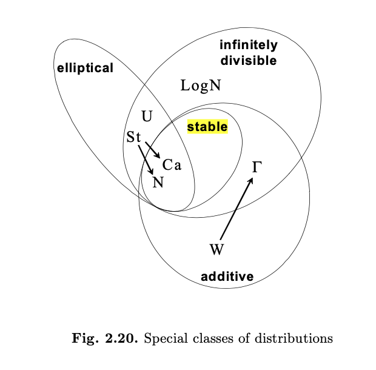
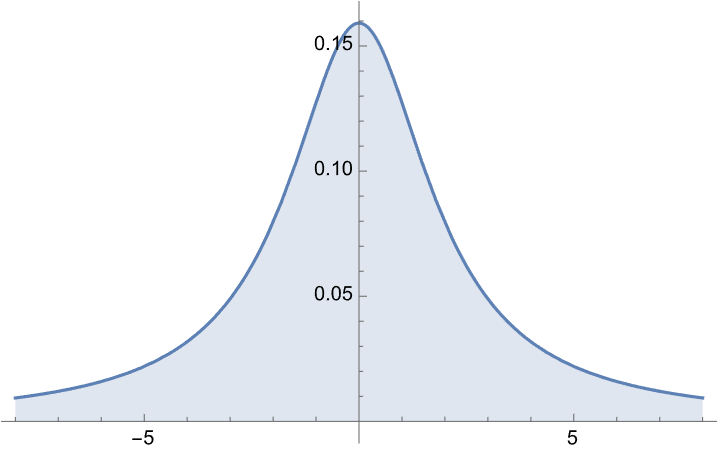
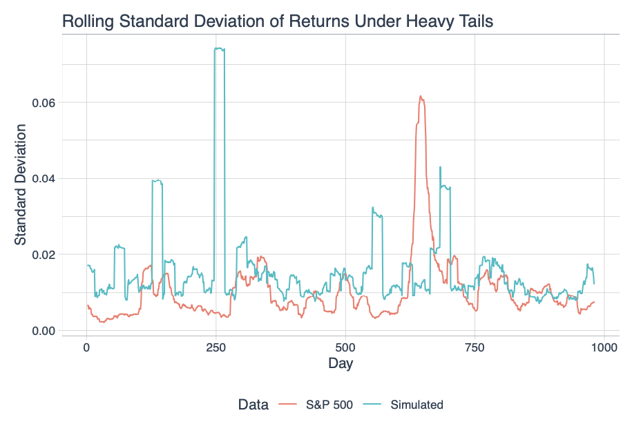

Why Stable?
This page tries to explain the benefits of a stable model conversationally. I think a more formal, example-filled, adequately sourced version of this discussion would be useful early in my dissertation. But hopefully, this version is helpful for understanding my desire to use the stable model!
The question has come up – why use an alpha-stable distribution to model investment returns in the first place?
It’s worth noting that my goal isn’t necessarily to build an estimator that only works on stable distributions, but rather to build one that doesn’t immediately break if the distribution of the data is heavy tailed. Working with the stable distribution gives us something to anchor to for theoretical results.
Even when variance exists, my conjecture is that in the presence of heavy tails, a model that can accomodate infinite variance probably does better at measuring dependence in finite samples.
(Or to paraphrase a comment I read on the internet: in the real world, a slowly converging integral is no better than one that doesn’t converge at all.)
Why Stable?
Stable distributions generalize the normal distribution, which has typically been used commonly in finance, allowing for heavier tails – and shocks or jumps.
Arguably, for any stochastic additive process with countably infinite increments (e.g. like log-returns), if “sufficiently large” summands aren’t suitably well-behaved, we have an argument for using a stable distribution. More concretely, when the central limit theorem provides a justification for using the normal distribution throughout mathematical finance, when the variance of those increments is infinite or the tails of the increments are large enough that their sums have slow convergence to the Gaussian regime, a stable distribution makes more sense.
By the Generalized CLT of Gnedenko and Kolmogorov (1954), the sums of any i.i.d. random variables must be alpha-stable in distribution.

Financial returns have been observed to be strongly non-Gaussian for nearly a century, and in the early 1960s, the stable distribution was suggested as a model for financial returns by Benoit Mandlebrot. Around that same time, significant research was done in extending Gaussian assumptions in asset pricing models to the more realistic stable distribution by future Nobel laureate Eugene Fama. More recently, books like Stable Paretian Models in Finance have extended more contemporary financial models to being driven by stable distributions.
Why Aren’t Stable Models More Common in Finance?
Despite significant theory and justification for using stable distributions, they’re not commonly used in practice. One reason for that is that they’re less accessible to non-mathematicians than simpler Gaussian models, while also implying less explainability than more sophisticated models that only work in the rearview mirror (e.g. ex post, there is more noise).
I’d speculate that another reason has to do with timing. When Harry Markowitz introduced Modern Portfolio Theory in the 1950s, he brought the idea that variance should be used as a measure of investment risk, and presented a framework for portfolio contruction that implied Gaussian returns - the mean-variance approach pioneered by Markowitz at this time only guarantees optimality if the distribution of returns is fully parameterized by its mean and variance, which forms a complete sufficient statistic for the Gaussian. This made the normal distribution a more appealing choice during this time.
By the time enough computational power was available to deal with stable distributions (and, for instance, calculate their PDFs and estimate parameters using MLE), that computational power could be used instead for nonparametric/empirical approaches, and many practitioners burned by failures of the Gaussian model were turned off by parameteric approaches. In some sense, stable distributions missed the boat despite arguably being a better model than either (empirical distributions in particular are problematic because of the “unseen” tail that’s impossible to estimate for events that haven’t happened yet).
The idea of using standard deviation to define investment volatility (and risk) has likely been one of the biggest challenges to seeing stable models get used more widely. Some have argued that infinite variance implies infinite risk, which is not correct.
In fact, stable distributions have well-defined scale parameters that behave just like standard deviation in the Gaussian case – as I’ll go into below, they are exactly related to standard deviation in the \(\alpha\)-SG(\(\Sigma\)) case.
These scale parameters have direct applications to portfolio optimization when simple returns are stable, and more importantly, they describe the decreasing marginal benefit to diversification that we see in the real world when returns come from heavy-tailed distributions (See Nolan, 2020, p. 35).
Why Sub-Gaussian
When thinking about stable distributions as a generalization of the Gaussian, the \(\alpha\)-SG(\(\Sigma\)) class of stable distributions can be thought of as a minimal relaxation: they share all the dependence structure of a Gaussian, but have the ability to present heavier tails and jumps.
Stable distrbutions lend themselves well to portfolio construction when they model simple returns; the dispersion matrix \(\Sigma\) has been shown to be a coherent risk metric that can be used to build a portfolio when an agent is averse to risk. (See Kring, et al., 2009)
While more complicated dependence structures are possible with a stable distribution by lifting the symmetry assumption, I think the tradeoff lies in the ability to estimate those parameters well enough as well as the futility of trying to accomodate those dependence structures in a portfolio whose returns are an affine transformation of the underlying return vector. In other words, the juice isn’t worth the squeeze for a more complex model.
Why Infinite Variance
Infinite variance itself isn’t necessarily a desirable attribute for our model distribution. Rather, it is a side effect of having a target distribution that can accomodate realistic jumps/shocks/outliers.
While it’s true that with a stable distribution we have positive probability of seeing an arbitrarily large realization, the same is true of the normal distribution too!
So, this question is less “why infinite variance?” and more “why not infinite variance?”
Ultimately, infinite variance says more about a distribution’s speed of tail decay than it does about the likelihood of an extreme event in general. I’ll attempt to address some possible objections to infinite variance models below:
Infinite variance does not say anything about the variability of a distribution
While variance can be a useful metric to compare the variability of distributions, once it’s infinite, it’s no longer meaningful to compare.
As an example, take the Cauchy distribution below, a symmetric distribution which has infinite integer moments:

Compare this to a \(N(10^8,1)\) distribution, and taking random deviates from each, it’s clear that the Cauchy’s central tendency or typical realizations are not “higher” in any sense. It’s is simply no longer a meaningful quantity (no pun intended) because the integral fails to converge.
Similarly, the stable random variable \(X \sim S_{1.9}(0.01,0,0)\) with 99.9985% of its probability density on [-1,1] has infinite variance. When the second moment doesn’t converge, that’s really only a commentary on the speed of tail decay relative to the expectation being integrated.
Infinite variance models are a realistic choice for investment returns.
Empirically, investment returns are heteroskedastic. This has led to many more complicated models to explain the behavior of prices (regime models, stochastic volatility, etc.).
But looking at even a very simple Lèvy flight driven by a stable distribution, the empirical rolling standard deviation is quite well modeled by stable returns:

Finite variance does not solve the practical challenges of heavy tails
When we allow the second moment to exist in a heavy-tailed distribution, we do regain some nice theoretical properties but, in practice, results will largely be indistinguishable from the infinite variance regime.
For example even if variance is finite, convergence of the integral (and by extension a sample-based estimate of it) may be so slow that finite-sample estimates are effectively stochastic. This is almost more problematic because it creates a tendency to be overconfident in higher-moment estimates.
With the stable model, the \(\alpha\) parameter can be treated like a confidence metric for moment estimates; for instance, \(\alpha\) near 2 suggests that the mean will likely be well behaved and reliably estimated in small samples.
Infinite variance does not imply infinite or undefined variability.
While variance may be undefined, other measures of variability, such as mean absolute deviation will exist when \(\alpha>1\). Likewise, median absolute deviation will always exist. Arguably, even if variance did exist as well, one of these more robust measures of variability may be a more appropriate/interpretable quantity in a heavy-tailed application like modeling financial returns.
Likewise, while theoretical variance may be undefined for a stable distribution, sample variance from a realization of that stable distribution will always exist and controlling it is a common investment objective in portfolio construction.
In that case, it’s straightforward that the minimum stable scale portfolio will also be the portfolio with the smallest expected median realized standard deviation. Similar extensions can be made for other objectives.
Moreover, by appreciating the fact that target metrics may not converge in expectation, it’s possible to treat them more realistically - e.g. by building a portfolio that has a 90% probability of not exceeding an undesirable sample standard deviation.
Infinite variance does not mean that tail events are more likely.
It’s true that under some regularity conditions (e.g. unimodal and monotonically decreasing tails) a stable random variable will have higher variability (however you choose to measure it) than, say, a normal random variable with the same scale parameter. But that setup artificially handicaps the stable random variable.
With some of the variability “handled” by a lower \(\alpha\), the stable random variable fit to the same data as a Gaussian will have a lower scale parameter.
One way to see this is that by choosing a Gaussian with the probability of an “extreme event” p, I can choose a scale parameter for a stable random variable with arbitrary choice of \(\alpha\) such that the probability of the same extreme event is less than p.
For this reason, infinite variance distributions are more reasonable than normal distributions for modeling exceptionally low-volatility assets that endure rare, but proportionally meaningful price shocks.
An unbounded distribution is a reasonable choice for investment returns.
Because this is also a characteristic of the Gaussian, this question doesn’t get addressed often.
There is no economic theory I’m aware of that would justify hard bounds on investment returns. Anything is possible, however vanishingly small the probability of a quadrillion-percent move. In fact, because of the fact that investment returns are heavy-tailed imposing a hard upper limit (and getting it wrong) will have drastic consequences on the interpretation of the model.